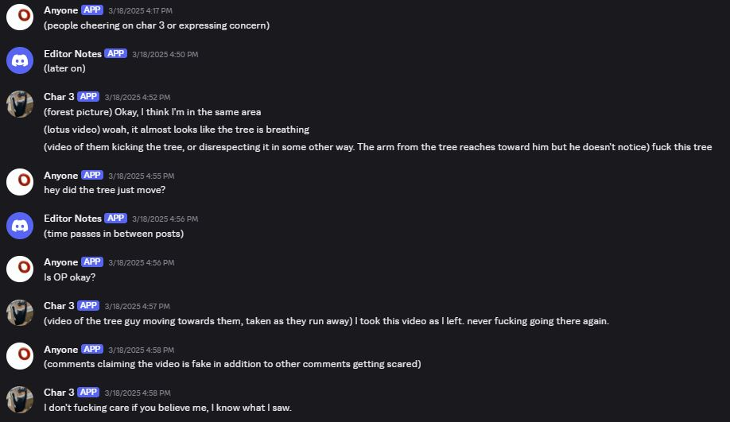
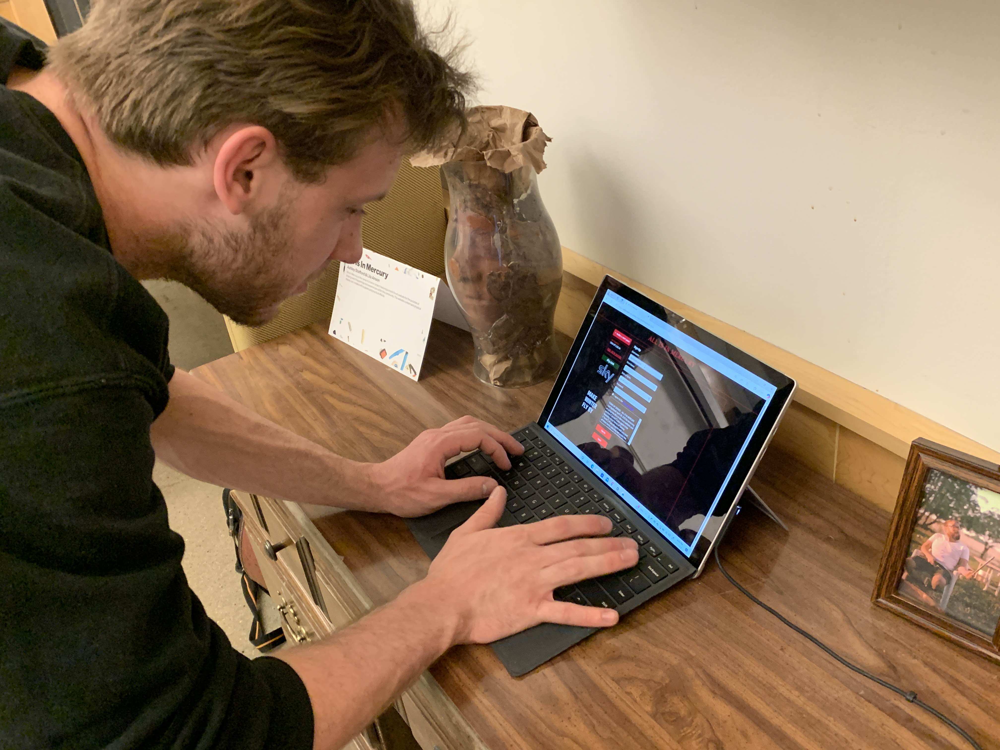

OUR PROJECT
All Is In Mercury is the name of a horror project featuring a mock forum website for the purpose of sharing weird happenings and experiences within the community. The website content and physical display are created with puppets and practical effects.
Why?
The internet is its own medium—a fusion of image, video, sound, and story.
Internet experiences aren't new—mysteries and horrors have long lurked in the corners of the web, waiting to be discovered.
This is one of those experiences.
WEBSITE
Setting the Scene
Our design inspiration comes from early 2000s websites like Myspace and Neocities. Both of these resources allow users to customize their virtual space, so the designs were very distinct, themed, and personal.
We lean into beginner HTML/CSS/JS styles to reflect the story of a small creator just building something for himself and a few friends—something that accidentally grew into a tight-knit community.
Design Iterations
Early Mockups
The earliest designs were mainly for testing what functions could appear where rather than on the actual design.
The first significant design matched an early 2000s cyber aesthetic and was created on figma and then interated on within the HTML, CSS, and JS. Although we moved away from this design, it helped create the spacing which remains relatively similar.
Development Challenges
| Challenge | Solution |
|---|---|
| Creating authentic "dated" aesthetics without overly frustrating users | Conducted user testing with a range of aesthetics looking for a middle ground where users wanted to stay on the site but still felt it was oudated |
| Simulating a site with multiple users | Developed chat scripts and utilized localStorage to make the user feel as if they are creating an account, chatting, and adding friends |
| Populating potentially hundreds of post pages | Implemented dynamic post rendering by parsing URL query parameters and data-id attributes to load new info |
Final Gifs
The goal is to make each user feel like they're having a unique experience—one that's different even from the person who visited the site just before them. To start, the site prompts them to create an account.

The chat feature occasionally receives strange messages—random chatter, chainmail, and even complaints about the chainmail. Users can send their own messages and will occasionally get a response, adding to the unpredictability of the experience.

The website is filled with content that branches away from the main storylines, inspired by old Reddit horror pages. Some entries are cryptic and unsettling, others are full-fledged stories. To help users navigate this chaotic archive, a “See Similar” section surfaces related content by matching keywords—offering a thread to follow through the madness.

Then there are the main storylines. The deeper the user explores the site, the more they begin to notice recurring usernames and multi-part posts that thread together, revealing interconnected narratives and hauntingly consistent themes.

PHYSICAL & NARRATIVE
Narrative
Inspiration
Initial sketches and discussions were used to brainstorm for the narrative. Playlists were made to capture the aesthetic and themes I hoped to capture.
Mapping it Out
Rough storyboards were drawn out to communicate the intended structure of the story.
These storyboards were continued in more depth using programs such as FigJam and Obsidian.
Dialogue
A series of profiles were created using the Discord bot Tupperbox to represent the different characters in the story, along with other functional elements. The dialogue and organization of the posts featured could then be assembled as mock-posts in discord.
Blood Boy Dialogue
Poker Night Dialogue
Lover's Roots Dialogue
"Blood Boy" Story
Planning
Several mockups were made to plan the composition of the final video.


Physical Elements: Electronics
A water pump component was controlled by an Arduino Uno to pump water on and off at a repeated interval. Adaptors were 3D printed with TPU to attach the tubing to the water pump.


Physical Elements: Body
The silhouette of a volunteer was traced onto folded fabric that was then cut out and sewn together. Prior to sewing the dummy body shut, a wire skeleton was sculpted and placed inside so that the body could be posed, and finally the body was stuffed. A plastic tub was combined with tubing to store and pump the fake blood through the tubings that went inside the dummy’s arms and neck and out into blood bags.


Physical Elements: Blood
Sheets of plastic from Ziploc bags were cut down and ironed together to make blood bags. Duct tape labels were placed on each bag with the symbols for “life” “blood” and “mercury” from alchemy written along them. SFX makeup blood mixed with water was used to create fake blood.


Physical Elements: Makeup
SFX makeup was applied to a volunteer’s back to mimic the bruises that come after donating blood.

Digital Elements: Models
Two adaptors were created to attach the tubing to the water pump component; one to accommodate for two tubes, and a second to accommodate for three tubes. All models are made from scratch.


Digital Elements: Edits
Fake text, snapchat, and app pictures were created with photoshop.


Digital Elements: Footage
A group of volunteers were assembled to create a party scene where various shots originated from. In a different location, the body was posed on a bed with the pump powered on to capture that shot.
"Poker Night" Story
Planning
Various sketches and mockups were created to convey the differing web aesthetics.


Physical Elements
The organs from a Frog Dissection Kit model were printed with TPU and then painted with spray paint and acrylic paints. While these organs did not make it into the final website, they were placed in specimen jars and used in the final display.


Digital Elements: Podcast
Volunteers recorded lines from a script and were photographed for website visuals. The pictures were edited to add a cartoonish intensity to them. A fake ad banner was created as well.


Digital Elements: Footage
Several volunteers were recorded while performing a gesture of their choosing (they chose one that references Pink Floyd).
"Lover's Roots" Story
Planning
Mockups were made to convey the design for the physical effect, as well as the urban legend image.


Physical Elements: Mold Making
An alginate mold was made of a volunteer’s face, with a plaster and gauze mother mold. A face cast was then made with plaster. A new mold was made of the plaster cast, using BBDINO Silicone. The final cast was made with liquid latex and strips of an absorbent fabric to prevent tearing, and the cured silicone was coated in baby powder to prevent sticking. The cast was colored using SFX makeup.


Physical Elements: Moving Arm
Dowels had holes drilled through the side and into the top of them allowing string to be looped through and secured, effectively making the joints/structure of the moving arm. A tube was sewn and filled with weighted pellets, then sewn off again to make two separate weights, which were then attached to the ends of each dowel, adding weight to the arm’s movement. Foam pieces were carved to fit the weights, and all elements were attached.


Physical Elements: Tree
A wooden structure was made to ensure the size of the tree stump, and then chicken wire was placed to ensure the shape. A paper-mache like technique was used to cover the frame in cheap fabric and paper. The clay purchased was quite tough, and needed to be melted and mixed with petroleum jelly before it could be worked with. While in a liquid state, clay was placed over the paper-mache base, providing thickness and texture. Clay that had begun to cool was placed into the stamp mold and then along the tree stump. Once the tree was fully covered, it was spray painted, and some colorful details were added with SFX makeup. Foam was sculpted and painted to create a face, arm, and shoulder (the shoulder also acted as an anchor for the movement) to be added to the stump. Clay details were removed so that the foam pieces could be glued to the stump, and then another layer of paint was added all over to ensure consistent coloring. Fishing line was secured to the joints of the arm to allow easy control of the movement. The previously cast latex face was added to the foam base. Once all elements were secured, an uneven surface in the dirt was created for the stump to be placed on and partially buried. Organic elements such as grass and flowers were added to complete the look.


Digital Elements
A picture of the final stump effect was edited and paired with the urban legend poem to create the post that would be shared.


Display
A laptop was displayed on an old desk, where it was surrounded by decorations and the desk drawers were filled with visually interesting items that related to the narrative.
Layout: Framed Pictures
Old pictures of two featured volunteers were edited to look sun/water damaged, and then displayed in frames.
Layout: Head in a Vase
To display the details of the tree stump effect, the face and bark casts were placed inside of a frosted vase to create the effect of a head being inside the vase.


IN ACTION
Trailer Video
TEAM
Ashley Stafford
Ashley was responsible for the physical effects, video production, and narrative of the project. Their inspiration for the story came from a variety of horror projects, such as ARGs and movies, that are referenced in bits and pieces all throughout the project. Many of the effects were designed with the intention to provide experience with mold making, electronics, and puppetry, and as a result Ashley’s experience with such topics is greatly enhanced. With this project has come a variety of portfolio pieces that showcase Ashley’s ability to work with diverse materials in novel ways, creating engaging and innovative visuals to bring the narrative to life.
Lila Anson
Lila was responsible for the technical development, user interaction design, and website architecture of the project. She built the forum-based web experience from scratch using HTML, CSS, and JavaScript, implementing subtle unsettling elements and designs to support the horror narrative. Throughout the process, Lila navigated challenges related to data binding, handing large amounts of media, and simulating a functional yet eerie interface. The project became a space to deepen her understanding of JavaScript and overall web development while crafting a uniquely immersive digital experience.